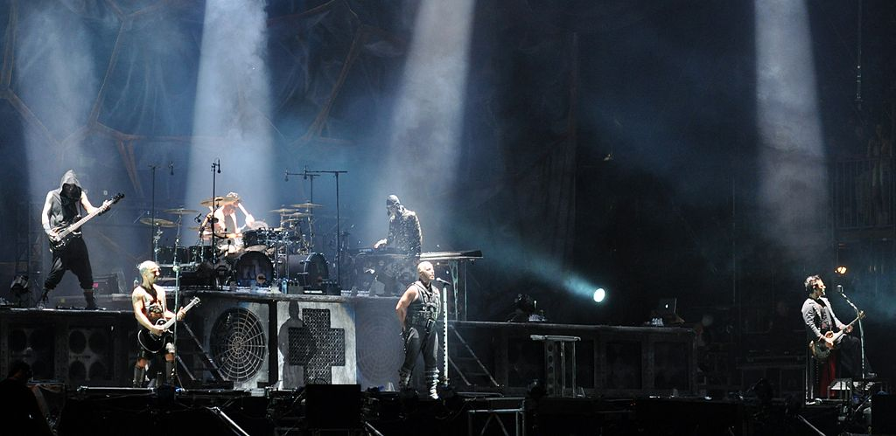

Rammstein (German pronunciation: [ˈʁamʃtaɪn], lit. "ramming stone") is a German Neue Deutsche Härte band formed in Berlin in 1994. The band's lineup—consisting of lead vocalist Till Lindemann, lead guitarist Richard Kruspe, rhythm guitarist Paul Landers, bassist Oliver Riedel, drummer Christoph Schneider, and keyboardist Christian "Flake" Lorenz—has remained unchanged throughout their history, along with their approach to songwriting, which consists of Lindemann writing and singing the lyrics over instrumental pieces the rest of the band has completed beforehand. Prior to their formation, some members were associated with the punk rock acts Feeling B and First Arsch.
Rammstein was one of the first bands to emerge within the Neue Deutsche Härte genre, with their debut album leading the music press to coin the term, and their style of music has generally had a positive reception from music critics. Commercially, the band has been very successful, earning many No. 1 albums as well as gold and platinum certifications in countries around the world. Their grand live performances, which often feature pyrotechnics, have contributed to the growth in their popularity. Despite success, the band has been subject to some controversies, with their overall image having been criticized; for instance, the song "Ich tu dir weh" forced its parent album Liebe ist für alle da to be re-released in Germany with the song removed due to its sexually explicit lyrics.